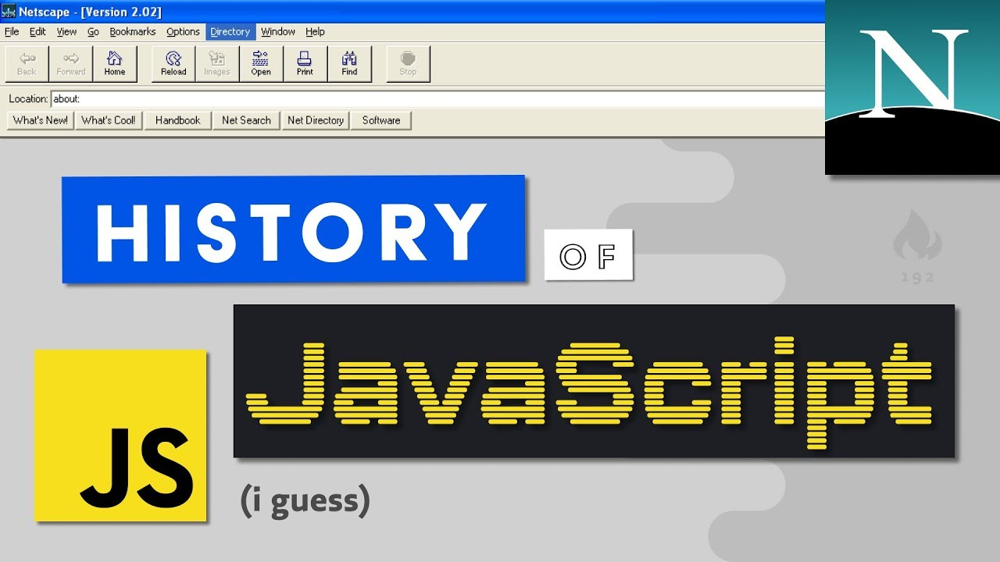

In late 1995, when Microsoft cottoned-on to the competitive threat the Web posed, the Internet Explorer project was started in an all-out attempt to wrestle control of the emerging platform from Netscape. In so doing Microsoft became a mortal threat, compelling Netscape to respond. First, they started a standardization process to prevent Microsoft gaining control of the JavaScript language. Second, they partnered with Sun to leverage their shared interest in breaking the Microsoft monopoly. Sun began development of Java in 1990 in an attempt to write a language for “smart appliances”. This approach floundered and in 1994, Sun regrouped and set sights on the Web as the delivery platform of choice. 